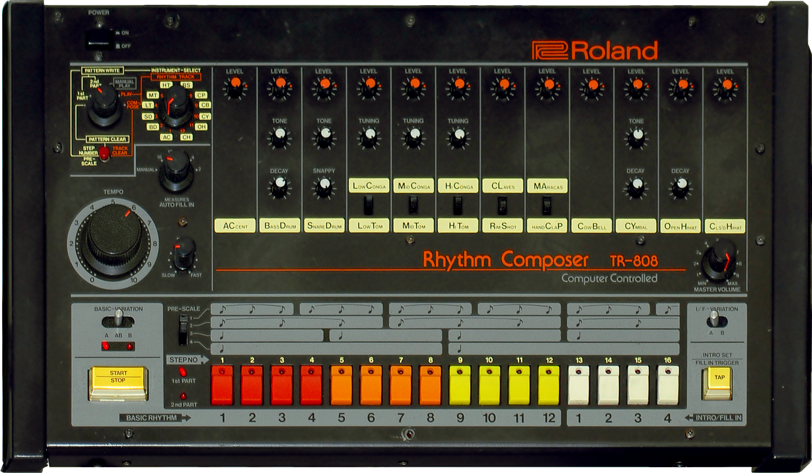
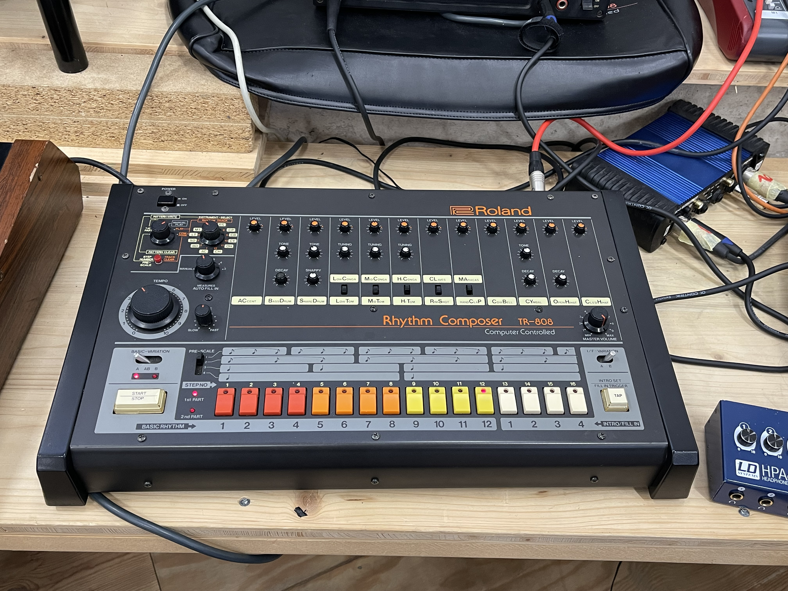

Roland TR-808 Rhythm Composer
The 16-step LED grid that taught a generation to think in sequences

Overview
The Roland TR-808 Rhythm Composer is a drum machine manufactured by Roland Corporation from 1980 to 1983, designed by a team led by chief engineer Tadao Kikumoto (with Makoto Muroi, Hiro Nakamura, and Hisanori Matsuoka credited alongside). Rather than store samples, it synthesizes its percussion from analog circuits, and founder Ikutaro Kakehashi deliberately bought a lot of slightly faulty transistors because their quirks gave the machine its signature sizzle. It listed at US$1,195 and fewer than 12,000 were made — a commercial failure, discontinued in 1983 when the faulty transistors ran out.
Its real invention is the interface. The 808 was the first drum machine that let you program rhythms instead of choosing presets. The front panel is a grid: 16 step keys, each with an LED that lights in turn as the pattern plays; 12 instrument-select buttons; a mode selector for pattern write, manual play, compose, and song mode; tempo controls; an accent control; and a bank of 27 knobs and 8 switches shaping the sound of each voice. Select an instrument, put the machine in pattern-write mode, and tap the step buttons to place hits on the grid — with an accent option per step, A/B parts of up to 16 steps each, and a song mode chaining patterns across 768 measures. It also offered DIN-sync output, the precursor of MIDI.
Culturally it is the most-used drum machine in history: 'Planet Rock' (1982), Marvin Gaye's 'Sexual Healing' (1982), then the bedrock of hip-hop, Miami bass, Detroit techno, and trap — Kanye West's 808s & Heartbreak is an explicit tribute. The New Yorker's history of the machine argues its influence is really the influence of sequence-thinking: music conceived as patterns to be repeated and revised ad infinitum. The 808's grid UI is why the 808 is a way of thinking, not just a sound.
Deep dive
The 808 replaced the drum pads of its expensive rival, the Linn LM-1 ($5,000, played in real time) with a grid: 16 columns of time, one row per instrument, LEDs walking across the columns as the pattern loops. To program a beat you are literally writing in a two-dimensional matrix — timbre on one axis, time on the other. This is the ancestor of every step-sequencer interface in modern music software. Where the TB-303 is the same idea made illegible (no display, two-pass entry), the 808 is the idea made visible: the LED tells you exactly where in the bar you are.
Before the 808, drum machines played preset patterns; rhythm was performed, not written. The 808's write mode, pattern-chaining song mode, and per-step accent made rhythm a compositional language. The machine's grid UI is the mechanism of its cultural power — it changed not just what music sounded like but how music was conceived, as infinitely revisable sequences.
Like its sibling the 303, the 808 failed commercially — fewer than 12,000 units, discontinued in 1983, used units under $100 by 1984. And like the 303 it was adopted precisely because it was cheap and weird: the 'wrong' transistor-sizzled cymbals and the thumping sine-wave kick became the sound of hip-hop and house. The 808's low-shelf boom remains the single most imitated drum sound in popular music.
Team & pioneers
- Roland Corporation. Manufacturer of the TR-808 (1980–1983); founded by Ikutaro Kakehashi
- Tadao Kikumoto. Chief engineer of the TR-808; proposed an analog drum synthesizer when sampling memory was too costly
- Ikutaro Kakehashi. Roland founder who deliberately bought faulty transistors for the 808's signature sound
- Makoto Muroi, Hiro Nakamura, Hisanori Matsuoka. TR-808 engineering team (sound circuits, hardware, software)
Media
